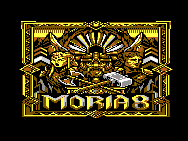
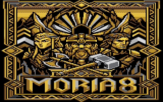
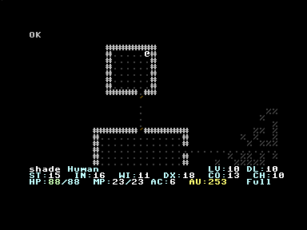
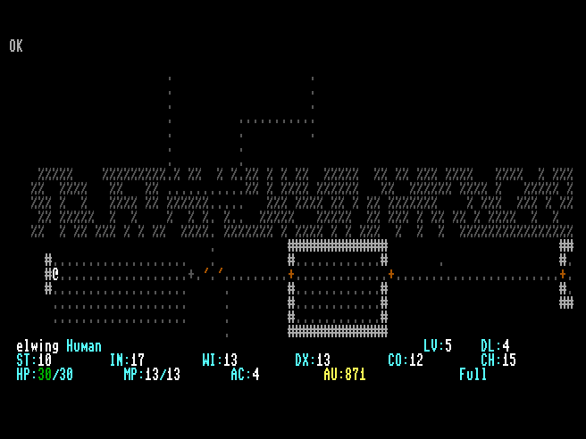
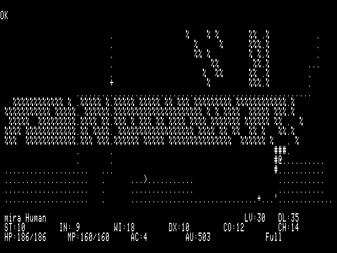
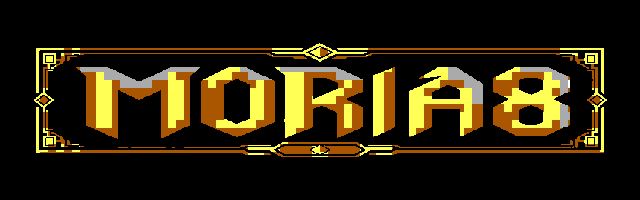

Original hardware or C64 Ultimate
40 COL · SID

Four machines · One dungeon
A ground-up assembly port of the classic roguelike for the Commodore 64, Commodore 128, Commodore Plus/4, and Apple II.
Commodore 64 · Commodore 128 · Commodore Plus/4 · Apple II
Four machines · One adventure
Stock up in town. Search every dead end. Know when to retreat. Then go deeper than good sense allows.




The Dungeons of Moria
Moria is a single-player dungeon simulation where preparation matters as much as courage. Build a character, provision in town, and brave a living maze of monsters, magic, traps, and treasure.
Choose your race and class, then buy food, light, armor, weapons, and the means to escape.
Fight from corridors, search for hidden doors, identify strange objects, and know when to retreat.
Grow strong enough to reach the deepest levels and challenge the Balrog for a royal victory.
Free and open source
Use the disk image with original hardware, modern storage hardware, or your favorite emulator.
For the C64 Ultimate, original hardware, VICE, SD2IEC, and 1541 Ultimate II+.
A native 80-column build for real C128 hardware and the VICE x128 emulator.
A standard 1541-compatible D64 for Commodore Plus/4 hardware and the VICE xplus4 emulator.
For an Apple IIe with 128K, Apple IIc, Apple IIgs, MAME, or another compatible emulator.
Not sure how to load a disk image? Open the troubleshooting guide

Knowledge is armor
The tavern is open
Share victories, report strange dungeon behavior, get help, or join the work of bringing Moria8 to more machines.